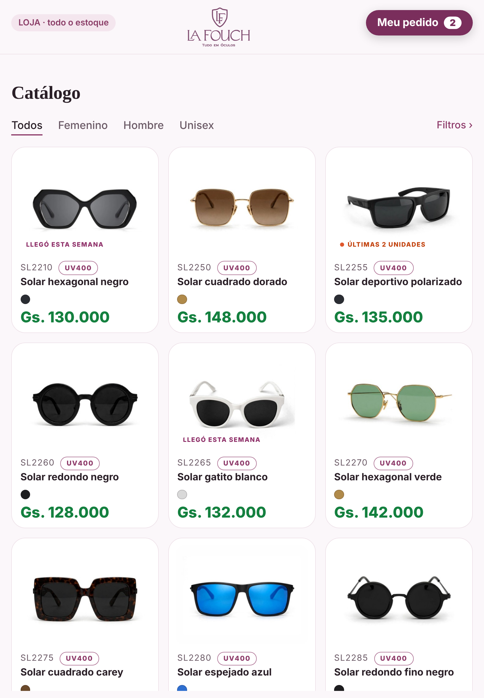
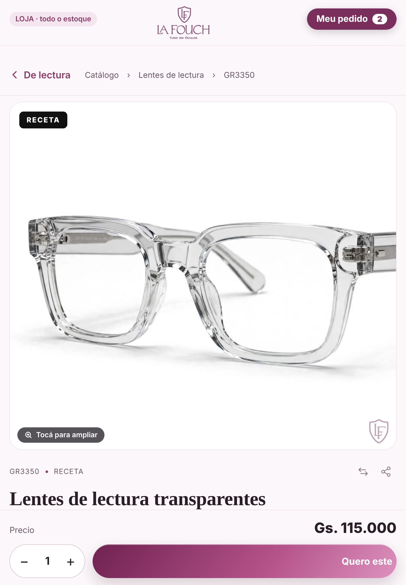
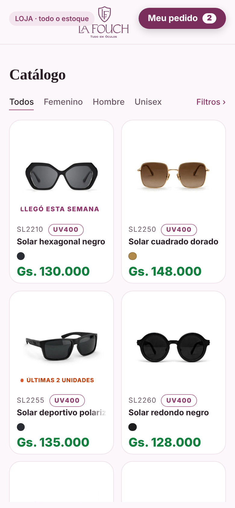
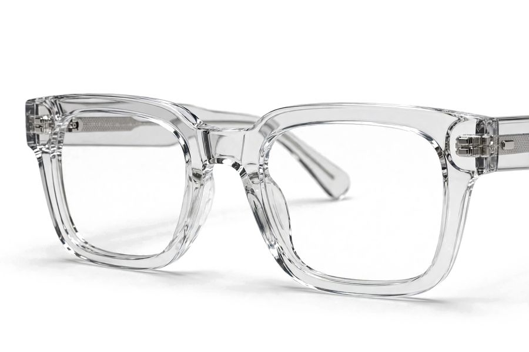

1 · Abre direto no catálogo (iPad)Igual ao site, com abas, filtros e busca. Mostra os 470 modelos do inventário, não só os publicados. Preço de varejo. Sem menu, conta, carrinho, favoritos nem WhatsApp. No topo, "LOJA · todo o estoque" e o botão "Meu pedido".

2 · Página da peça igual à do siteFotos, 360°, cores, régua de graus (o grau sem estoque fica riscado), medidas e "Combina também". "Comprar" vira "Quero este". Em vez do número de peças, aparece "Disponível" ou "Últimas 2 unidades", como no site.

Meu pedido Solar hexagonal negroSL2210Gs. 130.000Llamar a un vendedorSeguir mirando
Solar hexagonal negroSL2210Gs. 130.000Llamar a un vendedorSeguir mirando

Lentes de lectura transparentesGR3350 · +1,50Gs. 115.000Solar hexagonal negroSL2210Gs. 130.000O vendedor vê estas peças já no carrinho do app ao sair do modo catálogo.
3 · Meu pedido (celular)O cliente junta o que gostou. "Llamar a un vendedor" toca um som e mostra um aviso no celular do vendedor (se tiver a sincronização ligada). Sem pagamento aqui: quem finaliza é o vendedor.
LA FOUCHTUDO EM ÓCULOS
LF
Segure o logo… 3 s
Saída escondida para o cliente: segurar o logo 5 s (o anel enche) ou tocar 7 vezes. Sem PIN nem biometria, sai direto.
4 · Sair pelo logoIgual ao de hoje, mas com o anel mostrando o tempo. Quando acaba, abre a tela nova de PIN/biometria (5 e 6).
LA FOUCHTUDO EM ÓCULOS
Confirme que é você
Digite o PIN ou use a digital
1234567890⌫
Cancelar
5 · Tela nova: teclado do próprio appO teclado numérico fica sempre na tela (sem o teclado do celular). A digital ou o rosto abre sozinho 1 vez; o botão roxo pede de novo. Entra sozinho ao completar o PIN, sem botão "Entrar".
LA FOUCHTUDO EM ÓCULOS
La Fouch
Confirme que é você
Usar o PIN6 · Biometria com saída para o PINA janela do celular tem "Usar o PIN". Ao tocar, ela fecha e o teclado (5) já está pronto, sem sair de nada. Se a digital falhar: "Não reconheceu · digite o PIN". 5 PINs errados = espera 30 s com contagem na tela.